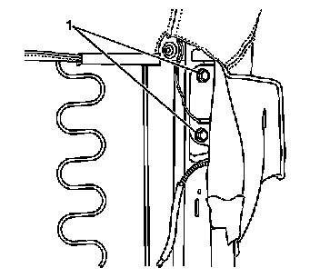
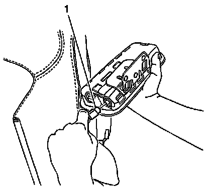

Inflatable Restraint Side Impact Module Replacement - Front
Inflatable Restraint Side Impact Module Replacement - Front
Removal Procedure
Caution: Refer to SIR Inflator Module Handling and Storage Caution (SIR Inflator Module Handling and Storage Caution) .
Caution: Following the deployment of a side impact air bag, inspect the following parts for damage. Replace these parts if necessary:
* The seat cushion frame
* The seat recliner, if equipped
* The seat adjuster
* The seat back frame
Failure to do so may cause future personal injury.
1. Disable the SIR system. Refer to SIR Disabling and Enabling (Service and Repair) .
Important: Removal of the right or the left inflatable restraint side impact module uses the same procedure.
2. Move the seat to the full forward position.
3. Remove the seat back trim. Refer to Front Seat Back Trim Replacement (Front Seat Back Trim Replacement) .

4. Remove the 2 bolts (1) from the inflatable restraint side impact module bracket.
5. Remove the module from the seat.
6. Remove the connector position assurance (CPA) from the module electrical connector.

7. Disconnect the electrical connector (1) from the module.
Installation Procedure
1. Install a new inflatable restraint side impact module bracket.
Caution: Following the deployment of a side impact air bag, replace the inflator module bracket to the air bag. Failure to do so may cause future personal injury.
Notice: Refer to Fastener Notice (Fastener Notice) .
2. Install the 2 bracket mounting bolts to the module.
Tighten the bolts to 9 N.m (80 lb in).
3. Connect the electrical connector (1) to the inflatable restraint side impact module.
4. Install the CPA to the module electrical connector.
5. Install the module to the seat.
6. Install the 2 bolts (1) to the inflatable restraint side impact module.
Tighten the bolts to 9 N.m (80 lb in).
7. Install the seat back trim. Refer to Front Seat Back Trim Replacement (Front Seat Back Trim Replacement) .
8. Enable the SIR system. Refer to SIR Disabling and Enabling (Service and Repair) .
9. Fully deploy the module before disposal. If the module was replaced under warranty, fully deploy and dispose of the module after the required retention period. Refer to Inflator Module Handling and Scrapping (Service and Repair) .